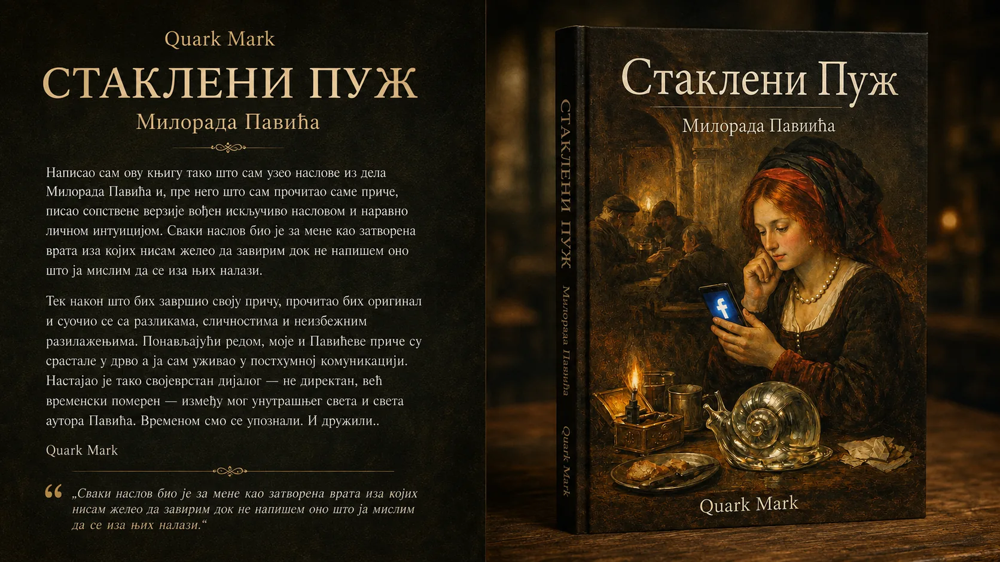
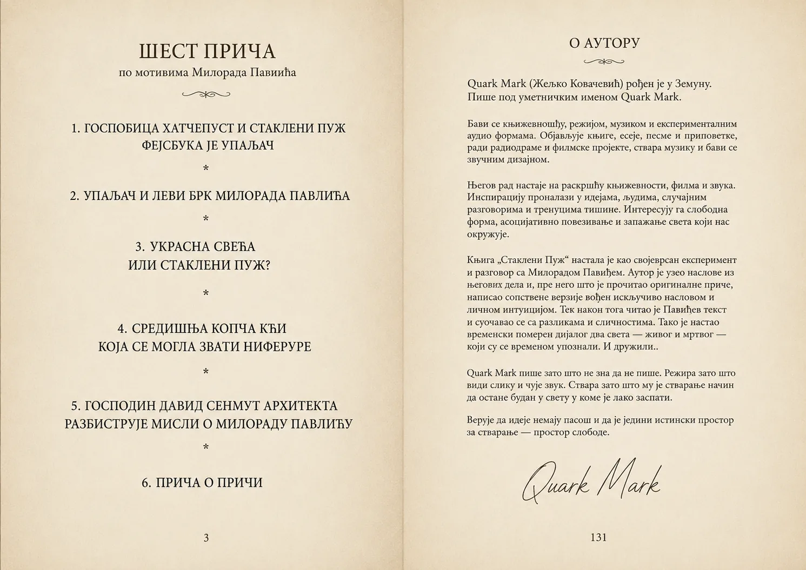

Stakleni puž · književni odlomak
Stakleni puž
Šta ako književni lik jednog dana zatraži objašnjenje od svog autora?

Autor je uzeo naslove priča Milorada Pavića i, pre nego što je pročitao originale, napisao sopstvene verzije vođen samo naslovom i ličnom intuicijom. Tek potom je čitao Pavićeve priče. Tako je nastao vremenski pomeren, posthumni dijalog između dva autorska sveta.
„Setih se svih svojih nepravdi, koje počinih voljno ili nevoljno, a osudih sebe neobičnom kaznom: da kucajući od vrata do vrata, namamim oproste u snovima ljudi koje uvredih svojim pisanjem.
Tako dođoh i do tebe, draga gospodjice Hatčepust, jer načinih ti nepravdu u priči mojoj pod imenom ‘Stakleni puž’. Ismejavao sam tvoju usamljenost i tvoju prostu želju da voliš i budeš voljena, iako je to onaj deo života gde se svi osećamo usamljeno. Gordio sam se nad zakonima uzimanja i davanja, nad zakonima slučajnosti koji čine život lepšom misterijom, i usled takvih reči zarobio sam te u priču čineći te večno nesrećnom!
Sada, i sam u večnosti van vremena, molim za oprost greha načinjenog u vremenu!“
✦
Večna samoća! Večna potreba da se voli i da bude voljena! Večna igra uzimanja i nasumičnog davanja! Zar su sve provalnice glupe? Zašto zarobiti ceo beskonačan unutrašnji svet u jedan običan stakleni puž?
Zašto mizerijom okopavati? Zašto?

Quark Mark